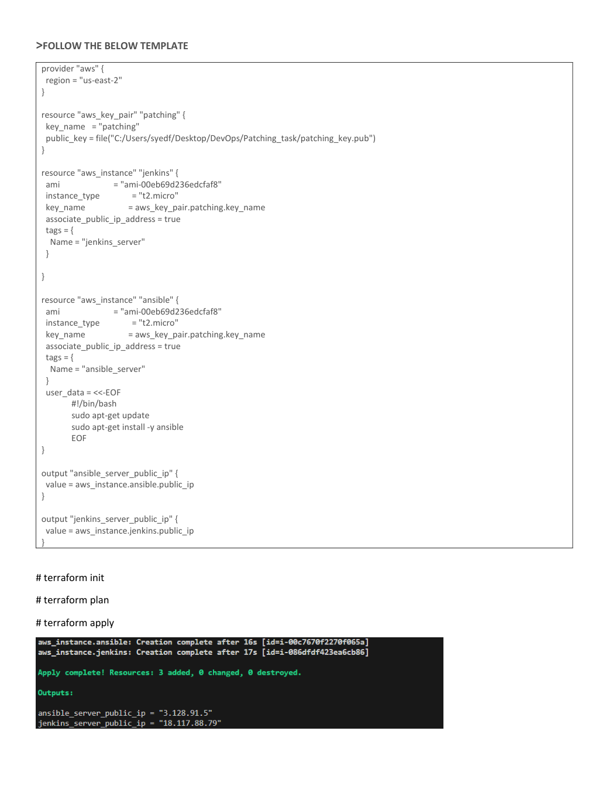
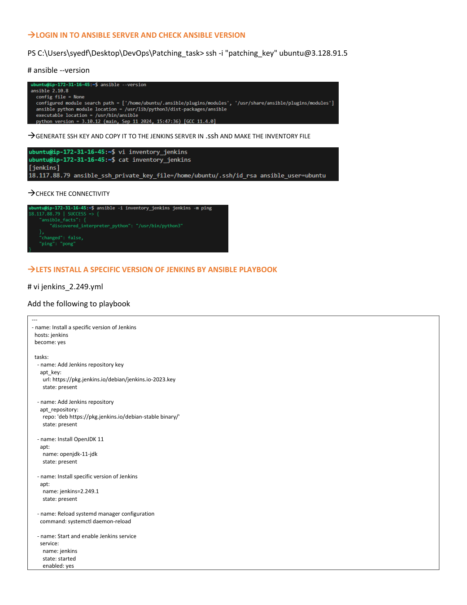
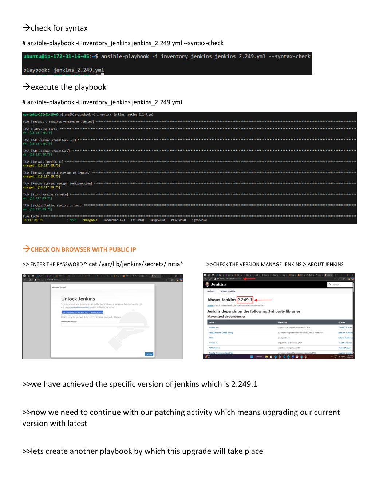
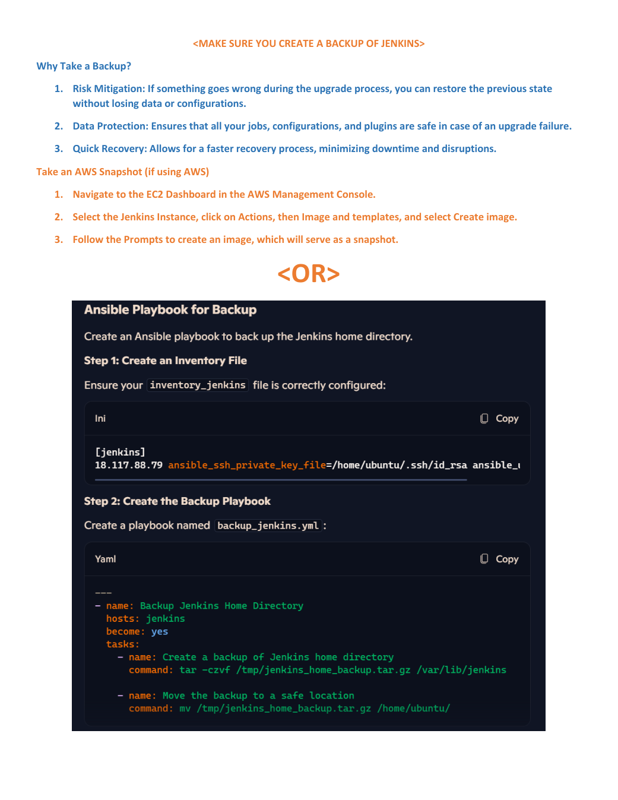
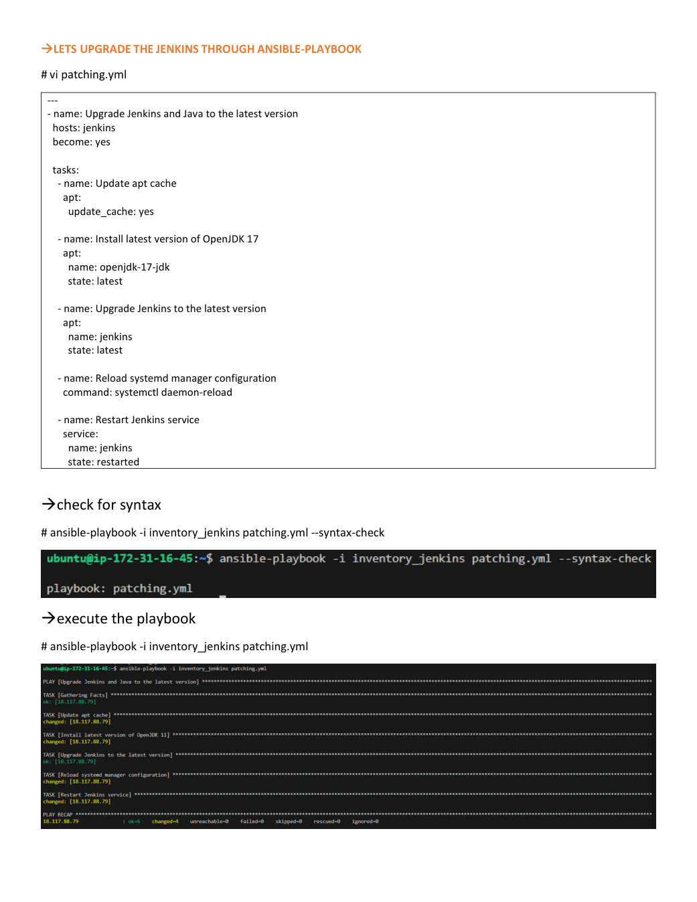
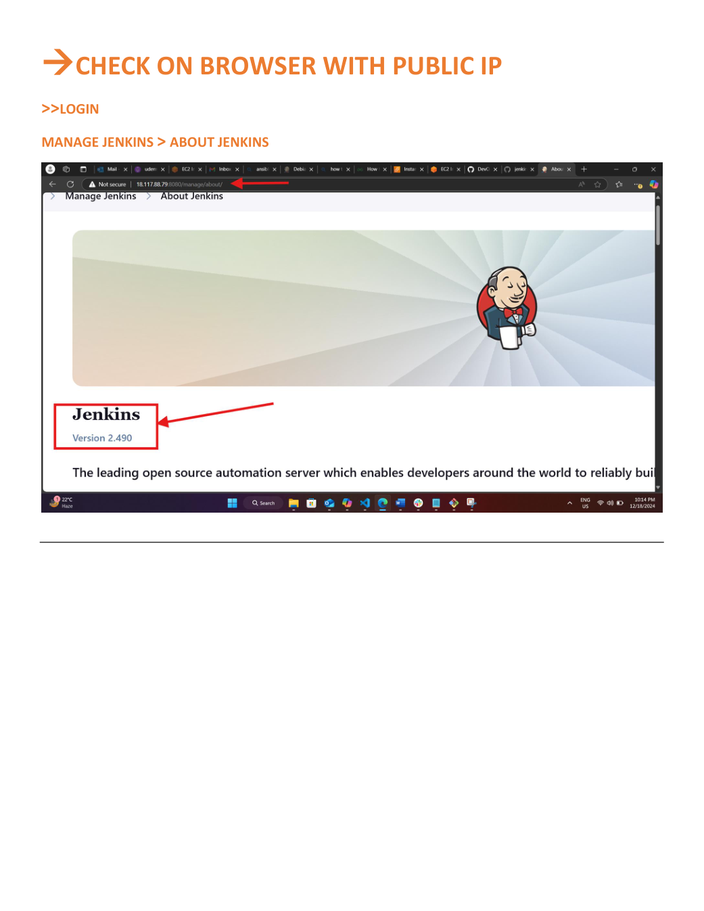

Jenkins upgrade automation
Provision the maintenance environment with Terraform, install a defined Jenkins version, back up Jenkins home, upgrade the package through Ansible, and verify the service afterward.
The source material uses Jenkins 2.249.1 as a pinned baseline and includes a screenshot showing 2.490 after upgrading. The old baseline is for reproducing the exercise only. Do not expose an obsolete Jenkins instance to the public internet. Use a disposable AWS environment and validate version/Java compatibility before running.
Overview
This project automates a Jenkins maintenance scenario documented in the supplied eight-page PDF. Terraform creates two Ubuntu EC2 instances: an Ansible control node and a Jenkins target. Ansible installs a specific Jenkins package version, backs up the Jenkins home directory before maintenance, upgrades Jenkins and its Java runtime, then checks the resulting service.
Architecture
Inbound SSH and Jenkins UI access should be restricted to approved source ranges. The control node connects to the target over SSH.
See the architecture notes for resource and traffic details.
Workflow
- Provision: Terraform creates the two instances and outputs their addresses.
- Connect: Ansible uses an inventory and a dedicated SSH private key.
- Pin: Install the requested Jenkins version to establish the exercise baseline.
- Back up: Archive `/var/lib/jenkins` before making package changes.
- Upgrade: Refresh APT metadata, install the supported Java runtime and upgrade Jenkins from the configured stable repository.
- Verify: Check package version, systemd service status and HTTP endpoint.
terraform init
terraform validate
terraform plan
terraform apply
ansible-playbook -i ansible/inventory/terraform.ini ansible/playbooks/install-pinned.yml -e jenkins_version=2.249.1
ansible-playbook -i ansible/inventory/terraform.ini ansible/playbooks/backup.yml
ansible-playbook -i ansible/inventory/terraform.ini ansible/playbooks/upgrade.yml
ansible-playbook -i ansible/inventory/terraform.ini ansible/playbooks/verify.ymlSetup
Terraform
cd terraform
cp terraform.tfvars.example terraform.tfvars
# Set admin_cidr and public_key_path before applying.
terraform init
terraform fmt -check -recursive
terraform validate
terraform plan
terraform applyAnsible
Ensure the control node can SSH to the Jenkins target with a dedicated key. Never commit private keys or real credentials. Terraform's generated inventory path is `ansible/inventory/terraform.ini`.
Full instructions are in the deployment and maintenance runbook.
Upgrade runbook
1. Install the pinned version
ansible-playbook -i inventory/terraform.ini playbooks/install-pinned.yml \
-e jenkins_version=2.249.12. Create a backup
ansible-playbook -i inventory/terraform.ini playbooks/backup.ymlBackups are timestamped under `/var/backups/jenkins`. In production, store a copy off-host and test restoration.
3. Upgrade and verify
ansible-playbook -i inventory/terraform.ini playbooks/upgrade.yml
ansible-playbook -i inventory/terraform.ini playbooks/verify.ymlThe package repository determines the latest candidate version when the playbook runs. Review Jenkins upgrade guides, plugin compatibility and Java requirements before upgrading a production controller.
Security and operational notes
- Restrict SSH and the Jenkins web interface to a trusted administrator CIDR or private network.
- Do not store AWS credentials or SSH private keys in Git.
- Back up Jenkins home and verify restore procedures before production upgrades.
- Check plugin compatibility and follow supported Jenkins upgrade paths.
- Use a supported Jenkins LTS and Java runtime for real deployments. The old pinned version is retained only to match the supplied exercise.
- Destroy lab resources when finished and inspect snapshots, volumes and public IPv4 charges.
Evidence screenshots
Images below were extracted from the supplied PDF. They are source-document evidence, not results from a fresh run of this repository.
Terraform provisioning

Install the pinned Jenkins version


Backup and upgrade


Final version check

Resume-ready project summary
Automated Jenkins version management on AWS using Terraform and Ansible. Provisioned separate control and target EC2 instances, configured SSH-based inventory, installed a pinned Jenkins package version, created a pre-upgrade Jenkins home backup, and automated package upgrades and post-upgrade service checks. Documented maintenance steps, security restrictions and validation evidence.
Use these claims only after you have run and verified the repository yourself.
Validation status
The repository and documentation are structured from the supplied PDF. This build has not been applied to AWS or run against a live Jenkins host. Before claiming a successful end-to-end deployment, validate the selected AMI, package availability, Java compatibility, security groups, backup integrity, service health and restoration process.